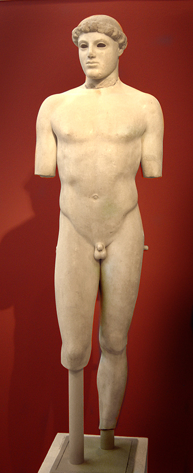
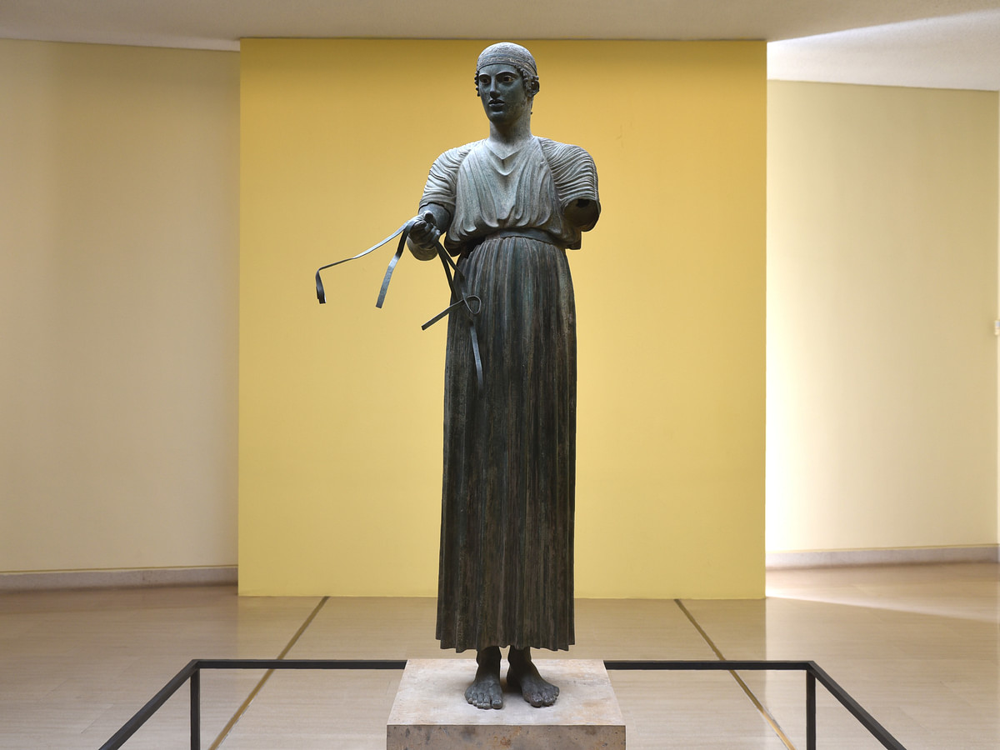
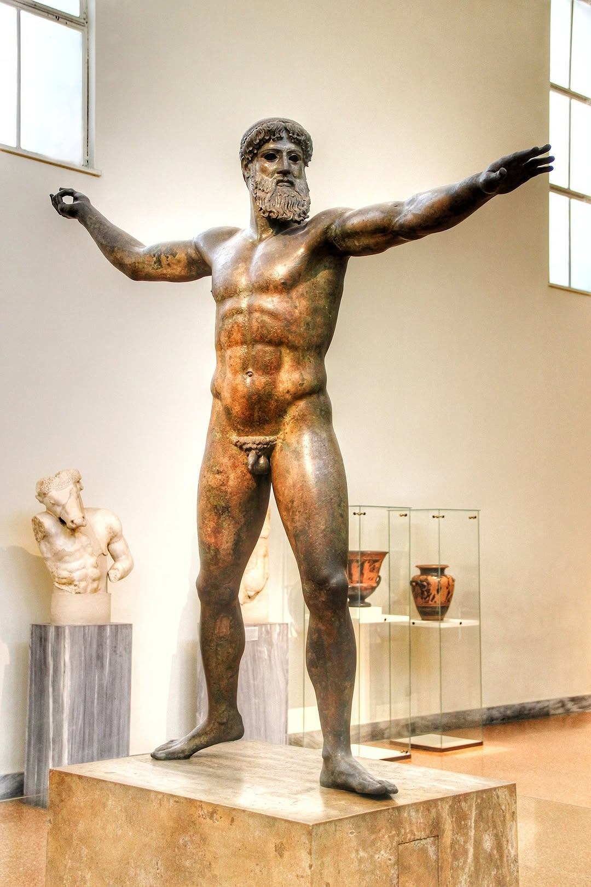

This lesson covers the Severe Style (also called Early Classical), roughly 480-450 BCE. This is one of the most important periods in all of art history - the moment when Greek sculpture broke free from Archaic conventions and became something entirely new.
Why This Period Matters
The Severe Style is your bridge between Archaic and High Classical. It's perfect for comparison essays: you can compare backwards to the Archaic kouroi (showing what changed) or forwards to High Classical works like the Doryphoros (showing what was yet to develop). Examiners LOVE questions about this transition.
The Three Prescribed Sources
Kritios Boy
c. 480 BCE. The FIRST example of contrapposto. Found on the Acropolis. Marble. Your key transitional work - still Archaic in some ways, but revolutionary in others.
Delphic Charioteer
c. 478-474 BCE. Bronze. Part of a victory monument at Delphi. Shows Severe Style restraint, dignity, and emotional control. Stunning inlaid eyes.
Artemision Zeus/Poseidon
c. 460 BCE. Bronze. Found in a shipwreck. Shows Severe Style dynamism and action. A god caught in the moment of throwing.
What IS the Severe Style?
The Severe Style gets its name from the serious, grave expressions that replace the Archaic smile. But it's about much more than facial expressions - it's a complete transformation in how sculptors understood and represented the human body.
Key Characteristics
Contrapposto
Weight shift onto one leg, creating a natural S-curve through the body. The biggest single innovation - makes figures look alive.
Serious Expression
The Archaic smile disappears. Faces become grave, contemplative, introspective. There's psychological depth.
Naturalistic Anatomy
Bodies respond naturally to the weight shift. Hips tilt, shoulders adjust, spine curves. The body works as an integrated system.
Restrained Emotion
Even in dramatic situations, figures maintain dignified control. Power is contained, not displayed wildly.
Historical Context: The Persian Wars
The Severe Style coincides almost exactly with the Persian Wars (490-479 BCE). The Persians sacked Athens in 480 BCE, destroying the Archaic sculptures on the Acropolis. The Greek victories at Marathon, Salamis, and Plataea created a new confidence and new resources. Some scholars argue the solemnity of Severe Style reflects the gravity of wartime experience; others see it as triumphal self-assurance. Either way, the world had changed - and art changed with it.
Key Vocabulary You MUST Know
Contrapposto
Italian for "counterpose." Weight on one leg creates opposing tensions in the body - engaged leg vs. relaxed leg, tilted hips vs. compensating shoulders. THE defining innovation of Classical sculpture.
Ethos
Greek for "character." The Severe Style emphasises ethos - dignified, noble character expressed through restraint and gravity. Contrast with later pathos (emotional intensity).
Lost-Wax Casting
The technique for casting bronze sculptures. Allows hollow figures, fine detail, and poses impossible in marble (like the Artemision Zeus's extended arms).
Ponderation
Another term for contrapposto - how weight is distributed and balanced in a standing figure. Sometimes used interchangeably.
c. 480 BCE | Marble | Height: 117 cm | Acropolis Museum, Athens

The Kritios Boy - often called the first truly Classical sculpture. Note the subtle weight shift and serious expression.
Description
Analysis
Thematic Links
What You Can See
The Revolutionary Pose
At first glance, the Kritios Boy might look similar to late Archaic kouroi like Aristodikos. But look more carefully at the hips and legs - something fundamentally different is happening here.
Left leg: Straight, bearing the body's weight - this is the "engaged" or "standing" leg
Right leg: Relaxed, knee slightly bent, heel raised - this is the "free" leg
Result: The right hip drops slightly lower than the left. This creates a gentle S-curve through the whole body.
THIS is contrapposto - and it changes everything.
How the Body Responds
Because the weight is on one leg, the whole body has to adjust:
Pelvis: Tilts down on the relaxed side
Spine: Curves gently to compensate
Shoulders: The shoulder on the relaxed side drops slightly
Overall: The body becomes an integrated system of balanced tensions
Face and Expression
The face marks another break with Archaic convention:
No Archaic smile: The lips are level, perhaps slightly downturned
Serious expression: Contemplative, introspective, almost melancholic
Head turn: The head turns slightly to the right, breaking frontal rigidity
Natural features: More individualised than the generic Archaic face
Hair
Short, cap-like hair with simple curls close to the head. Completely different from the elaborate beaded locks of Archaic kouroi. Practical, athletic, youthful.
Material
Marble. The head was found separately from the body; they're now reunited in the Acropolis Museum.
Provenance
Found in the Perserschutt on the Acropolis - debris from the Persian destruction of 480 BCE. Buried with the damaged Archaic sculptures.
Why Contrapposto is Revolutionary
For over 100 years, Greek sculptors had used the kouros formula: frontal, symmetrical, weight evenly distributed, left foot forward. The Kritios Boy breaks this formula - and opens up infinite possibilities.
What Contrapposto Does
1. Creates life: A symmetrical figure looks like a statue; a figure with weight shift looks like it could move at any moment. 2. Shows understanding: The sculptor understands how the body actually works - bones, muscles, weight, balance. 3. Enables variation: Once you understand contrapposto, you can pose figures in endless different ways. The rigid formula is gone. 4. Creates beauty: The S-curve is aesthetically pleasing - dynamic yet balanced.
Comparing to Archaic Kouroi
Feature
Archaic Kouros (e.g., Aristodikos)
Kritios Boy
Weight
Even on both legs
Shifted to left leg
Hips
Level, symmetrical
Right hip drops
Spine
Straight, vertical
Subtle S-curve
Expression
Archaic smile (or reduced smile)
Serious, contemplative
Effect
Static, eternal, symbolic
Alive, momentary, natural
Don't Overstate the Weight Shift
The contrapposto in the Kritios Boy is SUBTLE - much less pronounced than in later works like the Doryphoros. Don't describe it as dramatic or extreme. It's a gentle, almost tentative first step into the new Classical world. The revolution is happening, but it's happening quietly.
Attribution: Why "Kritios"?
The statue isn't signed. It's called the "Kritios Boy" because its style resembles what we know of the sculptor Kritios, who (with his partner Nesiotes) created the famous Tyrannicide group in Athens around 477 BCE. The attribution is based on stylistic comparison, not hard evidence.
Was It Really Made Before 480?
Because the Kritios Boy was found in the Perserschutt (debris from the Persian sack of 480 BCE), it must have been on the Acropolis BEFORE the destruction. This dates it to c. 480 BCE at the latest - making it roughly contemporary with the Persian Wars themselves. Some scholars argue it could be slightly earlier; others think it might have been damaged before the Persian attack. Either way, it represents the very moment of transition.
Exam-Ready Analysis Points
Key Vocabulary for the Kritios Boy
Pose: "contrapposto," "weight shift," "S-curve," "engaged leg," "free leg" Expression: "serious," "contemplative," "introspective," "no Archaic smile" Hair: "short," "cap-like," "naturalistic" Significance: "transitional," "revolutionary," "first true contrapposto" Style: "Early Classical," "Severe Style," "marks the end of the Archaic period"
Connecting to Bigger Themes
Theme: The Development of Naturalism
The Kritios Boy represents the culmination of the Archaic drive towards naturalism. For 100 years, sculptors had been making anatomy more realistic - but they'd kept the rigid, symmetrical pose. The Kritios Boy finally makes the POSE natural too. Now the whole figure - body AND stance - reflects how a real person actually stands.
Theme: The Persian Wars as Watershed
The Kritios Boy was buried in debris from the Persian destruction of Athens. It literally marks the end of Archaic Athens. When the Athenians rebuilt, they created Classical Athens - the Parthenon, the golden age, the art we consider quintessentially "Greek." The Kritios Boy stands at this turning point, looking backwards to the Archaic world it came from and forwards to the Classical world it inaugurates.
Theme: Body and Mind
The serious expression of the Kritios Boy suggests inner life - thought, feeling, psychology. Archaic figures with their fixed smiles look like beautiful symbols; the Kritios Boy looks like a person who thinks. This interest in the relationship between physical form and mental/emotional state will become central to Classical art (and later, Hellenistic art takes it further into intense emotion).
Theme: Convention vs Innovation
The kouros formula lasted over a century because it WORKED - patrons expected it, it had established meanings, and sculptors innovated within it rather than abandoning it. The Kritios Boy shows what happens when innovation finally breaks the mould. Once contrapposto exists, there's no going back to the rigid formula. Art history has turned a corner.
Comparison Opportunities
The Kritios Boy works brilliantly in comparison essays:
Aristodikos Kouros - Show the final Archaic vs. first Classical: same naturalistic anatomy, totally different pose
New York Kouros - Show 100 years of development from early Archaic to Severe Style
Doryphoros - Show how contrapposto develops from subtle (Kritios) to fully articulated (Polykleitos)
Delphic Charioteer - Compare two Severe Style works: one transitional marble, one mature bronze
Delphic Charioteer
c. 478-474 BCE | Bronze | Height: 180 cm | Delphi Archaeological Museum

The Delphic Charioteer - one of the finest surviving Greek bronzes. Note the extraordinary detail of the inlaid eyes and the dignified composure.
Description
Analysis
Thematic Links
What You Can See
The Figure
A life-size young man standing upright, holding reins in his extended hands. He wears the distinctive xystis - the long robe worn by charioteers during races, tied high at the waist with a belt and bound across the shoulders to prevent it billowing in the wind.
Pose and Stance
The figure stands almost vertically, with only a subtle weight shift. His pose is calm, controlled, dignified:
Arms: Extended forward, originally holding reins (parts survive)
Head: Turns slightly to his right - breaking strict frontality
Body: Mostly vertical, creating a column-like effect reinforced by the pleated robe
Feet: Bare, standing on the chariot floor (now lost)
The Robe (Xystis)
The xystis dominates the figure's appearance. Its treatment is extraordinary:
Long, vertical folds create a columnar, almost architectural effect
Below the belt, the pleats fall in regular, parallel lines
Above the belt, the fabric is gathered and bound, creating different textures
The precision of the pleating is breathtaking - yet each fold is slightly different
The Face - Stunning Detail
The face is where the Charioteer's famous quality is most evident:
Eyes: Inlaid with onyx (for the iris), glass paste (for the whites), and copper (for the lashes). Astonishingly lifelike.
Lips: Copper inlay gives them a reddish tint
Expression: Calm, focused, dignified. No trace of exertion or excitement despite having just won a race.
Headband: Wears a silver headband (the victor's prize), inlaid with silver and copper in a meander pattern
The Eyes Have It
The Charioteer's eyes are among the best-preserved examples of Greek inlaid eyes. Most bronze statues lost their eyes when they were melted down or damaged. These eyes - glass paste, onyx, and copper - create an uncanny sense of life. Ancient viewers would have found Greek bronze statues almost frighteningly realistic.
Context: A Victory Monument
The Charioteer wasn't a standalone figure - he was part of a large votive monument commemorating a victory at the Pythian Games (held at Delphi in honour of Apollo).
The Original Group
The complete monument included:
• The charioteer (what survives)
• A four-horse chariot (fragments of wheels and horses survive)
• Possibly a groom
• A rectangular base with a dedicatory inscription
The whole group would have been an impressive display of wealth, piety, and athletic success.
The Patron: Polyzalos of Gela
The inscription tells us the monument was dedicated by Polyzalos, tyrant of the Greek city of Gela in Sicily. He was brother to the more famous tyrants Gelon and Hieron of Syracuse. The victory probably dates to either 478 or 474 BCE.
Why Dedicate at Delphi?
Delphi was a Panhellenic sanctuary - all Greeks gathered there for the Pythian Games and to consult the Oracle. Dedicating an expensive monument at Delphi advertised your success to the entire Greek world. For a Sicilian tyrant, it was a way of asserting presence in the Greek heartland. The monumentality of the dedication reflected the patron's wealth and the prestige of victory.
Severe Style Characteristics
The Charioteer embodies key Severe Style values:
Restraint
He's just won a dangerous, exciting race - but shows no excitement. Victory is met with dignified composure, not celebration. This is ethos (noble character), not pathos (emotional display).
Seriousness
No Archaic smile. The expression is grave, focused, introspective. Even in triumph, there's solemnity.
Contained Energy
The power is controlled, held in check. The tension of the race is over, but the figure maintains control. This restraint is more impressive than wild celebration would be.
Idealised Youth
The face is youthful, beautiful, and idealised - yet more individualised than Archaic faces. There's a sense of a real person, elevated to ideal form.
Drapery Discussion
The Charioteer is excellent for discussing Greek drapery. The vertical pleats of the xystis create a column-like stability; the fabric is rendered with extraordinary precision yet appears natural; the different treatment above and below the belt shows sophisticated understanding of how cloth behaves. Compare to the flat, patterned drapery of the Berlin Goddess to show development.
Bronze Technique
The Charioteer demonstrates the sophisticated bronze-casting techniques of the Early Classical period:
Lost-wax casting: A wax model was covered in clay, melted out, and replaced with molten bronze
Hollow casting: The figure is hollow, reducing weight and material cost
Assembly: The figure was cast in pieces and assembled (head, arms, body)
Inlays: Different materials (copper, silver, glass, stone) create polychromatic effects
Cold working: Details like the curls were finished after casting
Why Did It Survive?
Most ancient bronzes were melted down for the valuable metal. The Charioteer survived because it was buried by an earthquake and landslide (possibly in 373 BCE) and forgotten. When it was excavated in 1896, it was one of the most exciting archaeological discoveries ever made - finally, scholars could see an original Greek bronze rather than Roman marble copies.
Connecting to Bigger Themes
Theme: Athletic Victory and Commemoration
Victory at Panhellenic games (Olympia, Delphi, Nemea, Isthmia) brought extraordinary prestige. Winners could commission statues, receive free meals for life, and have their fame spread through poetry (like Pindar's victory odes). The Charioteer shows how the wealthy commemorated victory: elaborate bronze monuments at sacred sites, advertising success to all Greece.
Theme: Greek Values - Sophrosyne
The Charioteer embodies sophrosyne (self-control, moderation). He's won a victory, but doesn't gloat or celebrate wildly. This restraint was a Greek ideal: the truly noble person controls their emotions and maintains dignity. The Severe Style as a whole emphasises this controlled, restrained ideal over Archaic decorative charm or later Hellenistic emotional intensity.
Theme: Bronze vs Marble
Most Greek bronzes are lost; most of what survives is marble (often Roman copies). The Charioteer lets us see what we're missing. Bronze allows: (1) finer detail (the eyelashes!), (2) polychrome inlays, (3) more dynamic poses (though the Charioteer is static). When you study Roman copies, remember they're pale reflections of lost bronze originals.
Theme: Art and Power
Polyzalos was a tyrant - an absolute ruler. Commissioning this monument displayed his wealth, his success, and his piety (dedicating to Apollo). Art served political purposes: establishing legitimacy, projecting power, competing with rival rulers. This intersection of art and politics runs throughout Greek history.
Artemision Zeus (or Poseidon)
c. 460 BCE | Bronze | Height: 209 cm | National Archaeological Museum, Athens

The Artemision Bronze - a god caught in the moment before throwing. The dynamic pose shows the full potential of bronze sculpture.
Description
Analysis
Thematic Links
What You Can See
A God in Action
This is one of the most dynamic poses in all of Greek sculpture. A bearded, muscular god strides forward, arms stretched wide, about to throw a weapon (now lost). He's caught at the moment of maximum tension - the split second before release.
The Pose
Left arm: Extended straight forward, pointing at the target, helping to aim
Right arm: Drawn back, ready to throw - would have held the weapon
Legs: Wide stance, weight balanced between both legs, striding forward
Head: Turned to face the target, gaze following the outstretched arm
Overall: The body forms a powerful X-shape, filling space in all directions
The Body
The anatomy is superb - idealised but anatomically sophisticated:
Muscles: Tense, responding to the action. Pectorals, abdominals, thigh muscles all defined.
Proportions: Heroically ideal - broader, more powerful than an ordinary man. This is a god.
Surface: Smooth, polished bronze catches the light beautifully
The Face
Bearded, mature, powerful. The expression is focused and intense, but still controlled - Severe Style restraint even in violent action. The eyes (originally inlaid, now empty) would have added to the intensity.
Zeus or Poseidon?
The debate continues because the weapon is missing:
• Zeus: Throwing a thunderbolt. Most scholars favour this - the commanding pose suits the king of the gods, and thunderbolts are typically thrown overhand like this.
• Poseidon: Throwing a trident. Some argue a trident would fit the hand position better, and the figure was found at sea (Poseidon's domain).
The debate is unresolved, so in essays you can refer to him as "the Artemision Zeus/Poseidon" or discuss the debate itself.
Discovery: From the Sea
The statue was found in pieces off Cape Artemision, at the northern tip of the island of Euboea, between 1926 and 1928. It had been on a ship - probably a Roman vessel transporting Greek art to Italy - that sank in antiquity.
Thank the Shipwreck
Ironically, this disaster preserved the bronze. If the ship had reached Rome, the statue might eventually have been melted down. Instead, it lay on the seabed for nearly two thousand years, protected from the recycling that destroyed almost all ancient bronzes. The Riace Warriors were preserved the same way. Shipwrecks are archaeology's best friend for bronzes.
Revolutionary Action Pose
Compare this to ANYTHING from the Archaic period and the transformation is obvious:
From Closed to Open
Archaic kouroi keep arms at their sides, legs close together. The Artemision god explodes outward, limbs extending in all directions. The body FILLS space.
From Static to Dynamic
Archaic figures stand still; this figure is caught mid-action. We see a MOMENT - the split second before the throw. Time itself is captured.
360-Degree Design
The figure works from multiple angles. Walk around it and you see different aspects of the action. It's designed for three-dimensional space, not just frontal viewing.
Potential Energy
The pose captures maximum tension BEFORE the throw. In the next instant, the arm will snap forward. We feel the energy coiled in the body, about to be released.
Why This Pose is Only Possible in Bronze
In marble, those extended arms would snap off under their own weight - there's no support. Bronze's tensile strength allows unsupported limbs to extend into space. This is why bronze was the preferred medium for ambitious sculpture. When you see Roman marble copies of Greek originals with added tree stumps, struts, or draped fabric "supporting" the figure, that's because the marble copy can't do what the bronze original did.
Still Severe Style
Despite the dynamic action, this is still recognisably Severe Style:
Expression: Focused and intense, but controlled. No wild grimacing or emotional excess.
Anatomical idealisation: The body is perfect, god-like, not individualised
Restrained power: The energy is contained, disciplined, not chaotic
Dignity: Even throwing a weapon, the god maintains divine majesty
Comparison with the Charioteer
The Charioteer and Artemision Zeus are both Severe Style bronzes from roughly the same period, but they show different aspects of the style:
• Charioteer: STATIC restraint - power contained, victory met with calm
• Artemision Zeus: DYNAMIC restraint - power in action, but controlled and disciplined
Together they show the range of what Severe Style could do. Use them to demonstrate that "severe" doesn't mean "boring."
Connecting to Bigger Themes
Theme: Representing the Divine
How do you show a god? The Artemision Zeus answers: make him physically perfect, heroically proportioned, caught in an act of divine power, yet maintaining dignity and control. This is anthropomorphic religion at its finest - gods who look like ideal humans, but more so. The same approach appears throughout Greek art and shapes Western religious imagery for millennia.
Theme: The Moment Frozen
Greek sculptors become increasingly interested in capturing specific moments - not eternal, timeless poses, but split-second instants. The Artemision Zeus represents maximum potential energy, the moment before action. Later works (like Myron's Discobolus) push this further. This interest in the momentary, combined with idealised form, gives Greek sculpture its distinctive quality.
Theme: Bronze and Its Possibilities
The Artemision Zeus shows what bronze could do that marble couldn't: unsupported extended limbs, fine surface detail, poses that would be structurally impossible in stone. Understanding the properties of bronze helps explain the forms Greek sculptors chose. It also explains why Roman copies in marble often look "different" - they're translations into a different medium.
Theme: Loss and Survival
The Artemision Zeus survives by accident - a shipwreck preserved what would otherwise have been recycled. This reminds us that our knowledge of Greek art is shaped by survival bias. The bronzes we have are a tiny fraction of what existed. The marble copies that dominate museums are themselves a filtered sample. Greek art history is partly a history of loss.
Thematic Overview: The Severe Style Revolution
Now that you know all three sources in detail, here's how to think about them thematically for essays and exams.
Theme 1: The Invention of Contrapposto
The Kritios Boy introduces the weight shift that transforms Greek sculpture. For the first time:
Figures look like they could MOVE - they're alive, not symbolic
The body is understood as an integrated SYSTEM of balanced tensions
Sculptors are freed from the rigid kouros formula to explore infinite variations
The foundation is laid for all later Classical and post-Classical sculpture
Contrapposto Essay Strategy
For any question about Classical innovation or the Archaic-Classical transition, contrapposto is your central argument. Trace it from the subtle shift in the Kritios Boy through to the fully articulated system in Polykleitos' Doryphoros. Show you understand WHY it matters, not just WHAT it is.
Theme 2: Ethos - Dignified Restraint
The "severity" of the Severe Style isn't about grimness - it's about ethos (noble character expressed through controlled emotion):
Kritios Boy
Serious, introspective expression replaces the Archaic smile. Thoughtfulness, not decoration.
Charioteer
Victory met with calm dignity, not celebration. Power contained and controlled.
Artemision Zeus
Even in violent action, the god maintains composure. Intensity without wildness.
This emphasis on restraint reflects Greek values: sophrosyne (moderation), dignified self-control, the belief that the truly noble person masters their emotions.
Understanding these differences helps you analyse why certain poses were possible and why our knowledge of Greek bronze sculpture depends on shipwrecks and burial.
Theme 4: Historical Context - The Persian Wars
The Severe Style (c. 480-450 BCE) coincides exactly with the aftermath of the Persian Wars:
490 BCE: Battle of Marathon - Greek victory
480 BCE: Persians sack Athens; battles of Thermopylae and Salamis
479 BCE: Battle of Plataea - final Greek victory
478 BCE: Delphic Charioteer dedicated
c. 480 BCE: Kritios Boy buried in Persian debris
c. 460 BCE: Artemision Zeus created
Did the war's gravity influence the "severe" mood? Did victory inspire the confident dynamism of figures like the Artemision Zeus? These connections are debated, but the chronological overlap is striking.
Quick Reference: Source Comparison
Source
Date
Material
Key Features
Kritios Boy
c. 480 BCE
Marble
First contrapposto. Transitional. Serious expression. Short hair.